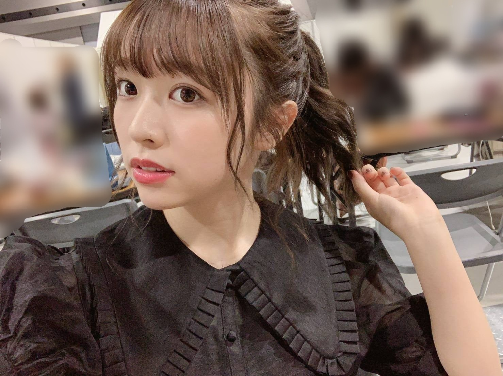
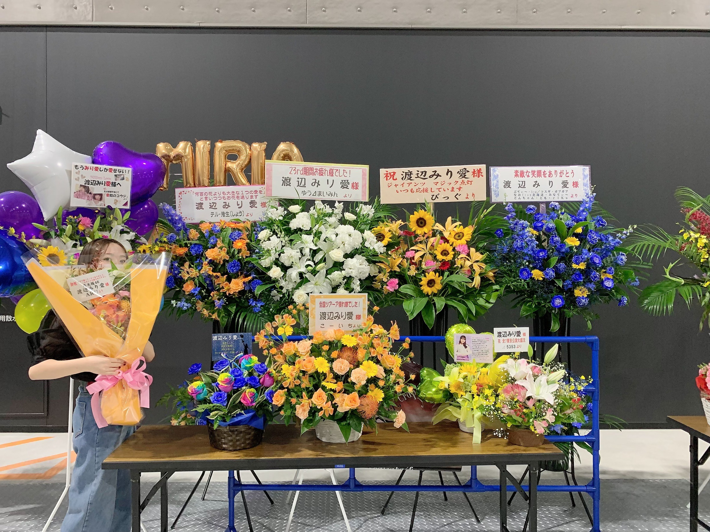
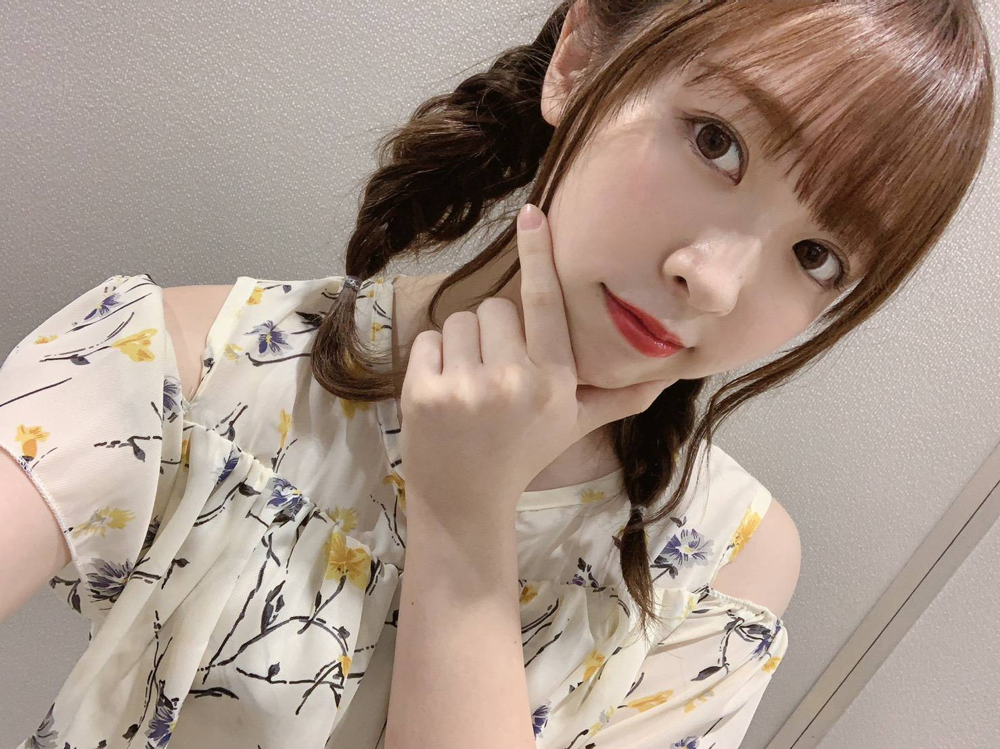
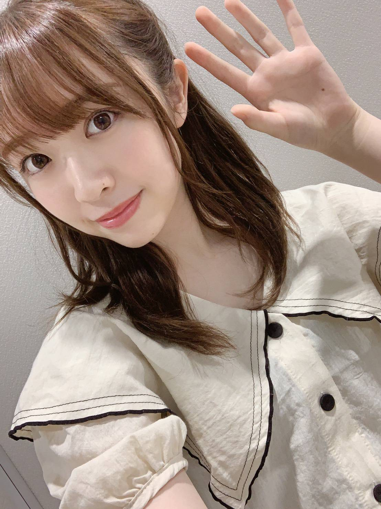
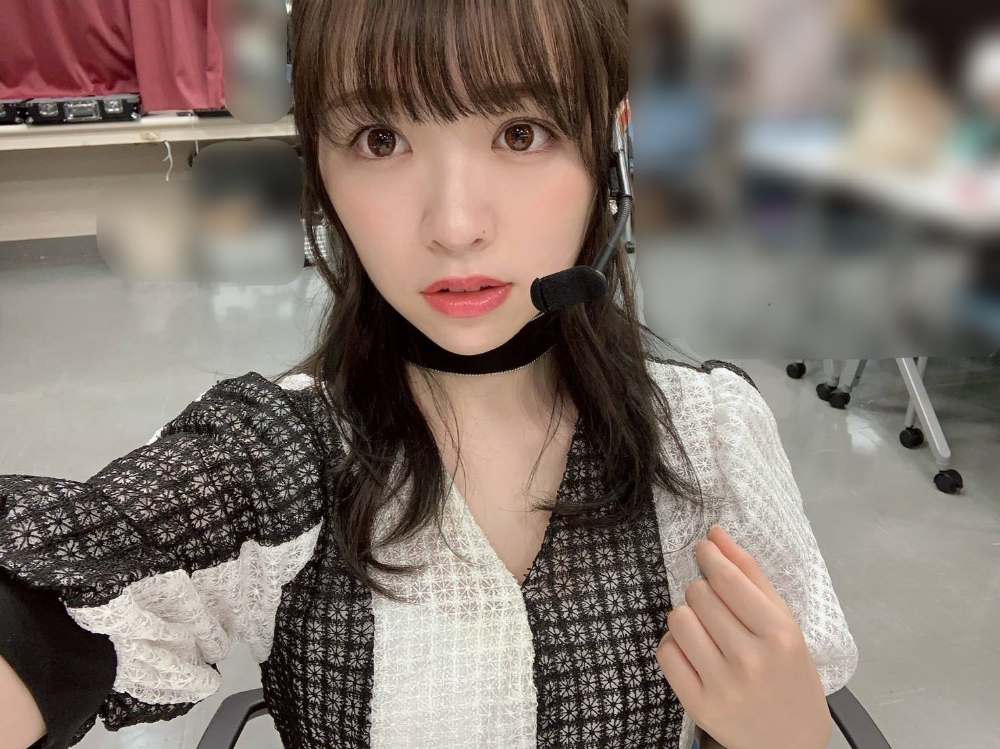

2019/0919Thuもののけ姫

そろそろおでんの季節ですよ〜
私は8月末からおでん生活開始しています！
3種類くらい好きなのを入れてスープは多め、
こんな事書いてたら食べたくなってきた。
皆さんの好きなおでんの具はなんですか？
先日は東京ビックサイトにて個別握手会
がありました。
お越し下さった皆様、有難うございました！

こちらは少々ややこしいのですが
名古屋の時に頂いたお花です。
東京では時間の都合上撮ることが出来ませんでした、、
申し訳ございません。
でも！しっかり目に焼き付けさせて頂きました！
有難うございましたm(._.)m

魚の骨

何の手？

夜明けまで強がらなくてもいい
ダンスや曲調、とても好みです！
のぎおび明日18:30〜です。
見てくださるととても嬉しいです。
みり愛
2019/09/19 19:48


コメント(699)
明日のぎおびあるの知らなかったからブログで報告してくれてありがとうございます。
いつもモバメ楽しみに拝見させて頂いています。
明日ののぎおび部活と重なるかもしれないけどできるだけ見れる努力はしますw
明日のぎおびが始まる前に755かモバメ辺りでお知らせして頂けるとありがたいですw
いつも応援してます！
おでんめちゃくちゃ早いね〜！w
なるは冬になってからじゃないと食べないな〜(笑)
夜明けまではなるも好きな曲、卒コンでじっくり聞いていい曲やなぁて思った、、歌番には全部参加してるんやね、楽しみ！ダンスも曲調もみり愛にあいそう＼^^／
生誕祭まであと約3ヶ月か〜長いな〜でも色々考えたりするのも楽しいよ〜
体調に気をつけて、がんばれ〜！
なるより
自分もこの時期おでんが食べたくなります！ちなみにはんぺんが好きです！
明日ののぎおび絶対に見たいと思います！！みりあちゃん見れるの楽しみにしてます！！
頑張ってください！！
おでんすごく美味しいよなあ、、
自分ははんぺんがめちゃめちゃ好き！
食べたくなったから、今日仕事終わりに買いに行く(笑)
個握お疲れ様
次の全握、個握行くから待っててー
この前の握手会、間近で見れてもう幸せです！！
顔面偏差値高いし、何もかもが天使です、、！
これからも頑張ってください応援してます！
おでんの具はだいこんがすき〜笑
受験終わったらみり愛ちゃんに会いに行くね(；＿；)
ずっと応援してます！！
昨日コンビニに行ったらおでんの匂いめっちゃしてた！でもなんかコンビニだと買いづらいw
デコ出しかわいいいいい☆！
握手会あざした！
何話したか覚えてないけどみり愛の笑顔で毎日なんとか乗り切っております笑
次の握手まで1ヶ月も空くのかー
無理ー。みり愛に会いたいー。
はい、でもですねスペイベ当たりまして似顔絵会行けるー！
イェーイ！って事でよろしくお願いいたしやす！
ちなみにおでんの具はちくわと大根好きよ
今日、コンビニで安かったから仕事終わりに買って食べたよ〜
美味しかったよー！！
ではまたー！！
おでんはやっぱり大根！！
明日、のぎおびみるよ～( ＾∀＾)
ビックサイトの握手会行ったよ！みりあちゃんに名前覚えるねって言ってくれてとても嬉しかったです！名前覚えるの大変だと思いますが良かったら覚えてくださいm(_ _)m
みりあちゃんの優しくて可愛くて、ダンスがかっこよくて歌声が綺麗でメンバー思いでファンおもいで全てが大好きです！
ありがとう！！！また握手会行かせていただきます！
コンビニのおでんってとっても美味しいですよねぇ〜。
おうちで作って家族で鍋を囲んで食べるおでんも美味しいけどやっぱりコンビニのおでんの方が好きかなぁ。笑
ブリン会でおでん会してね！！
今日今年初のおでん食べました！
8月からちょっと早めな気がする笑笑
明日ののぎおび絶対見ます！
今週の個握ありがとう！楽しい時間を過ごせたよ。なんかみり愛ちゃんの顔を見たら安心した。くだらない話ばかりで毎回申し訳ないけどみり愛ちゃんが笑ってくれたりすると本当に嬉しい。また早く会いたい気持ちでいっぱいだよ（笑）
魚の骨ヘア！！ブログに載せてくれてありがとう！個人的に初めて名前を知りました（笑）けっこう好きな髪型だったよ。
好きなおでんの具は大根、白滝かな！
季節の変わり目、体調には気をつけてお互い頑張ろうね。また来月の全握と宮城の個握でね。会えるの楽しみにしてるよ！
すごく楽しかった♪
明日ののぎおびみるよ〜！！
体調に気をつけて頑張ってね！
また握手いくよ〜！
のぎおび観ますね〜〜
こないだの握手会もありがとう！！
握手会じゃあんまり真面目な事言えんからここで言うね！笑
やっぱりみり愛の魅力はライブで120%伝わるなーってしみじみと感じました…。遠くからでも見つけられるみり愛のダンスと表現力！！本当にすげーし、苦労してたくさん努力したからこそなんやなって伝わってきた！！
ライブ初めて行った友達もみり愛のダンスカッケェ！って言ってたし分かる人には分かるんやなって嬉しかった！！
誇らしい気持ちになった！！笑笑ありがとう！！
これからも応援させてください！！そして本気でみり愛の幸せを願ってます！！
この間の個握はすごい楽しかったです！！
これからも行ける日は行きたいと思います！
明日ののぎおび絶対見ます！！
個握行って完全にハマったから25枚目出たら爆買いする！
阿部慎之助ボディから脱却した状態で
幕張全握行くね！！楽しみ！
7カ月ぶりの個握めっちゃ楽しかった( *´艸)
久しぶりにみり愛ちゃんに会えてよかった！！
相変わらず可愛くて幸せでした( ＾ω＾ )
アンダラ行けたらねって言っちゃったけどただチケットが当たってないだけだったんだよね‥‥‥
アンダラ行きたいな～
あと巨人の優勝も見届けましょう！！
みり愛ちゃんも小学生からのファンだったとは‥‥
今度はジャイアンツの優勝を祝いに握手会に行きます！！
次は生誕祭もあるから楽しみ！！
モバメも待ってまーす(^^)
8月末からもうおでん？！
早いね～
自分は巾着が好き。きつね揚げの中の餅が美味しいんだよね。
新曲でたくさんTVで観られて嬉しいよー！
好きなおでんの具はちくわです。
箸で持ったらへなぁってなるくらい柔らかくなってるのが好きです。出汁吸ってて食感も気持ちよくて最強です。
あ、158回目は嘘です。
握手会、東京は行けなかったけど名古屋全握個握行ったよ！初めての個握で変な緊張してたけどめっちゃ楽しかった！いろんな話ができてよかった！次は12月だ〜なかなか会えない。。
夜明けまで強がらなくていい。みり愛が踊ってるのを想像しながらよく聴いてます。ほんといい曲。みり愛に合う。
明日ののぎおび見れるよ！楽しみにしてる！！
相変わらず手の内のホクロが神々しいですなぁ(´▽`)（笑）
また近いうちにイベント行くからね〜✌︎
ちなみにそんちょうの生写真チケホルに入れてる女子だよ！！
覚えててくれたら嬉しみ☺︎❤︎
俺は今一人暮らしだからおでんなかなか食べれないかな〜
好きなおでんの具ははんぺん、卵、大根だよ。
明日ののぎおび楽しみにしてるね！！
16日の握手会ありがとうございました。
1部しか行けなくてごめんね。
全国ツアーやジャイアンツの話ができて良かったよ。
また12月の名古屋に行くからよろしくね。
お手紙も渡してあるから読んでくれると嬉しいです。
明日はのぎおび見るねー！
おやすみなさい。
仕舞った冬物、すぐ出すみたいな。
好きな具は、大根、卵、しらたきかな。
って、メインの魚の練り物がない。
やっぱりみりあちゃんは自撮りNo1。
のぎおび、り。
大好き
おでんの季節にはまだ早くない？ 笑
でも、僕も冬になるとコンビニとかのレジ横にあるおでん買っちゃうなぁ〜 やっぱりスープにたっぷり浸して食べるのが美味しいよね〜
名古屋の握手会行かせてもらいました〜
いつも笑顔で楽しくお話ししてくれていつも幸せなになります！ また次の握手会が待ち遠しいなぁ
いつもモバメありがとうー
忙しいと思うけど体調にはお気をつけて〜 応援してます！
この前の握手会も楽しかったよ〜
アンダラ約束通り見つけてね（笑）
まずはチケット当たる事を祈ってくださいw
ブログ更新ありがとーう
タイに来て1ヶ月半くらい、生活も安定して勉強も難しくなって来たけどまたライブも握手会も行きたいし頑張るよー！
おでんめちゃくちゃ食べたいいいい ちなみに大根がいっちばん好き！！！
握手会もお疲れ様ー！色んなヘアアレンジしてて良いねえ…どれも似合ってるけど巻いてるの超好き
新曲も早く生で聴きたいしダンスも見たい…！
またみり愛を見れる、ライブに行ける日を楽しみにしてるよん！
おでんの具はもちきんちゃく、大根が好き
個握などなどお疲れ様〜！
個握でみり愛ちゃん呼びからみんちゃん呼びになってとても楽しめた ありがとね！またよろしく〜！！
アンダラ当たったから全力でタオル掲げるね！！みつけてねーー
10/20の全握も行くから待っててね！
これからも応援してます
好きなおでんの具はたまご、大根、しらたきかな！
次みりあに会えるのは4枚目の大阪個握かなー
待ち遠しいなー！
握手会も楽しかった！
のぎおびまでに絶対仕事終わらせるね(^-^)v
好きなおでんの具は餅巾着と牛すじです。
寒いから体調に気をつけて頑張ってください。
ブログ更新ありがとう。
お花いつも綺麗ですな。
そろそろ、おでんの季節ですね～、
最近は肌寒くなってきて(。^。^。)
自分は、がんも・じゃがいもが
好きですね♪♪
可愛い写真もたくさんありがとう。
体調に気をつけて頑張ってください！
みり愛が、すちです♡
握手会行きたかったよー(´；ω；｀)
8月からおでんて暑くない？？笑
おでんの具は大根がシンプルに好きー！
自分で育てた大根でおでん作ったりするよー！！
夜明けは結構好き！リピしてる！
ダンスはみり愛ちゃんも好きそうだなって思った！バレエっぽい振り付けもあるし！
明日ののぎおび微妙な時間だけどできるだけ早めに仕事終わらせて見るよー！！楽しみにしてます！！
アンダーライブも行きたいけどまだチケット確保してない(´；ω；｀)
2次で当たるといいなぁ…
今日もお疲れ様！！
ブログ更新ありがとうね！！可愛い写真も見れたし、明日も頑張ろうー！
個握の服すごい好きだったし写真見て先週は楽しかったなあと思い出しました。
アンダラ行けなくて次の大阪個握までだいぶ期間空いちゃうけど音楽番組とかのぎおびとかの配信楽しみにしてます！
10代ラスト無理なくお仕事頑張ってください！
もーおでん！？
暑くない？
最近はちょっと寒いけど今食べてたら冬がもたなそう笑笑
おでんは巾着とこんにゃくが好きです！
みり愛は？
握手の間が空いてしまっている…
みり愛に会いたい…。
あーあーあーあー。
魚の骨とは？笑
選抜出なくてもみり愛がテレビで踊ってる姿を見れて嬉しい限りです！
やっぱりみり愛のダンスが好き！
どこにいても好きなんです。
1日1日好きが増してくよ〜
ブログ更新ありがとね^ ^
また頑張れる〜！
この前の握手会楽しかったよ！
明日ののぎおび見ます！
アンダラもあるし頑張ってね！
また全握いくよー！
おでんの具は、大根が一番好き！！染みてる大根美味しいよね〜！！
みり愛ちゃん、どんな髪型も似合いすぎて、キュンキュンするわ笑笑
早くみり愛ちゃんと握手したいなぁ〜！
コメントする